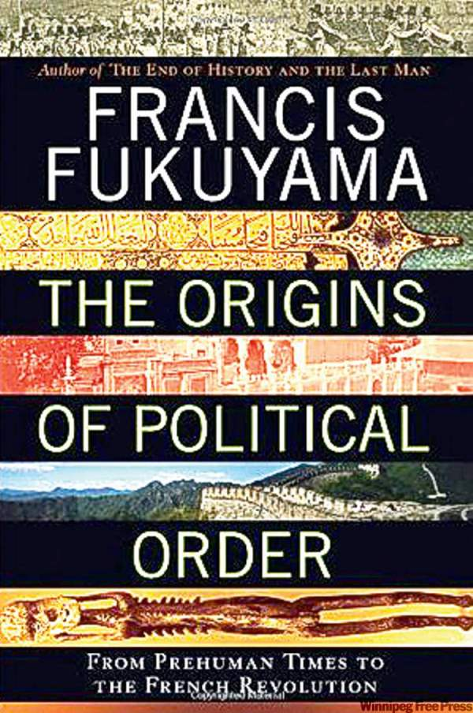
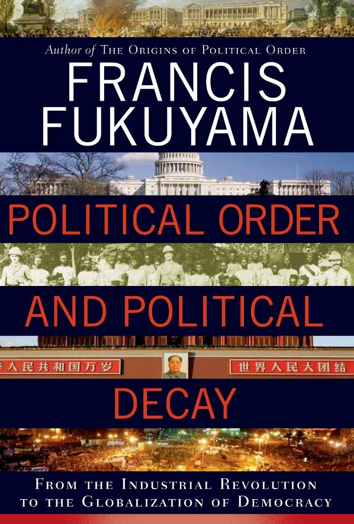

2014-10-24 02:12:00
原本我的本行是物理，后来改行做金融和经济。军事则是服役期间被派到金门当了情报官，专门负责閲读共军的文件（简体字是那时就学了），然后写报告，结果后来对共军的发展一直很关注。这也就是我这个部落格的三大主题。不过我对国际关系和政治体系也很有兴趣，尤其是和经济发展或政略戦略有关联的，我已经在前面的一些文章稍微射猎。但是我在政治学方面的学术根底不够，若是要写大题目，怕贻笑大方，所以一直计划着想挑选好的文章来翻译或摘要。
我过去这两年最喜欢的政治书籍是福山（Fukuyama）的两本新书。福山是个很有意思的人，他在25年前靠“歷史的终点”（“The End of History”）一炮而红，后来新保守主义（Neo-con）视他为宗主之一。既然美国是人类演化的终点，那侵略落后国家来强加美式制度就是有良知的美国人的天赋责任，而小布希是很有良知的，于是找了个藉口（WMD，Weapons of Mass Destruction）就侵略了伊拉克。没想到福山也有他自己的良知，而且和小布希不一様，福山的良知是基于现实结果的，所以他居然为伊拉克戦争而道歉了。此外，美国像他这様成了大名的学者，大多从此不干正事，只是在某个智库挂个名，然后到处给演讲，重弹老调骗取出场费，可是福山却老老实实地继续做研究。从福山最近这十年所写的东西来看，他实在经过了非常痛苦的内心挣扎，在仔细检验事实真相之后，不得不承认他的旧理论的谬误。除了那两本新书之外，他在最近一期的Foreign Affairs里所刊的那篇“America in Decay：The Sources of Political Dysfunction”（“衰退中的美国：政治失调的原因”），虽然谈的是全世界都知道的一件事，其讨论之深入、援例之广博，还是无人能出其右。
政治秩序的起源，从史前时代到法国大革命。

政治秩序与衰退，从工业革命到民主全球化。
可惜不论他的书还是文章都太深太博，我实在没空来翻译（而且台湾好像有一位教授已经把它整本翻出来了）。刚好昨天在Financial Times（金融时报）上有一篇由Martin Jacques所写的社论叫“The Myopic Western View of China's Rise”（“西方对中国制度的短视”），基本上是同一个论点（作者显然也读了福山的书），但是浅显简洁得多了，这我还有时间翻译一下。熟悉英文的读者可以直接看原文：http://www.ft.com/intl/cms/s/0/b2f1ef30-47c2-11e4-ac9f-00144feab7de.html?siteedition=intl#axzz3H1sYjSmv。
西方总以为中国会垮在它的政治制度上：中国不是西方式民主，所以它的政府撑不了多久，迟早得要改学欧美的制度。可是中国自己的制度其实已经有三十多年成功的纪录，而且还推动了人类史上最伟大的经济变革。中国政府效率极高，不但有高瞻远瞩的戦略眼光，同时也是非常务实而勇于尝试的。人民的生活水准大幅提高，因而对政府十分支持。所以等着中国垮台（尤其有些人总鼓吹会马上垮台）是完全不切实际的。事实上，真正可能发生的是经济继续发展，生活水准持续提升，而中国政府也越来越受百姓支持。
然而经济发展并不是中共当局唯一的民意依靠。西方人老是假设民主选举是任何政权的合法性来源；这对中国来说，是大错特错的。中国有2000多年的天命观念，国与家并列为中华文化的基石，中央政府是中华文明的具体化身和保卫者，这才是中国政权正统性的根源；而选拔贤能、为民服务的传统和君臣父子之间的伦理关系，更是根深蒂固的中国独有文化。
在古中国的朝廷昏庸衰弱的时代，整个国家也会跟着乱了；最明显的例子就是1840年鸦片戦争到1949年中共建国的那一百多年。所以中共在政治上的成就之一，就是在长期衰败之后，重建了强而有力的中央政权，在现代背景下，恢復了它的各项固有职能，包括它在国家社会的核心地位、贤能治国的传统、政权的正统性和组织动员能力。
很多人以为中共就是中共，它的制度一直没变。这个错觉来自于只把民主化才算是改革。其实自1978年以来，中国政府经歷了不间断的巨大改革，其幅度远超过英美自己所採行的变动。只要想一想，三十多年来中国推动了如此大规模的经济升级转型，它的政府怎么可能没有进行深刻的改革呢？这个经济发展和政治改革手牵手一起前进的过程，只会持续下去，而且会更让人嘆为观止。所以正确的态度不是把中国的政体当作一个脆弱、随时会垮的没用东西，而是应当认识到，根据过去三十年的实践结果，它是一个极为成功的体系，整个世界都将日益积极向它学习。
西方人喜欢假设是中国，而不是民主国家，会遭遇一连串的治理难题。这只是因为他们脱离了歷史现实，靠纯粹空想就把民主制度定义成一个永恒而完美的乌托邦。张大眼睛仔细看，你会发现其实美国的民主政府才是无力改革、短视近利、党同伐异而且纯为富人服务。
从歷史的大角度看，西方民主社会很可能将面临艰难颠仆的未来。这些民主国家过去的成功和它们人民的高生活水准，实在是植根于200多年来对世界的经济掠夺和政治控制，这当然是无法持续的。
现在西方国家普遍在衰退，欧洲尤其明显。到2030年，中国经济规模大概会是美国的两倍，可能高达世界的1/3，届时美国的霸权将烟消云散，而其人民必然会对国内的政治精英和体制进行反省。欧美各国的平均生活水准已经停滞了好一段时间了，你真以为能有稳定的社会？
歷史的常态是崛起中的国家有团结稳定的内政，衰落中的帝国则内部纷争不断。我们不该低估是西方民主国家而不是中国，会遭遇更严峻的治理难题的可能性。